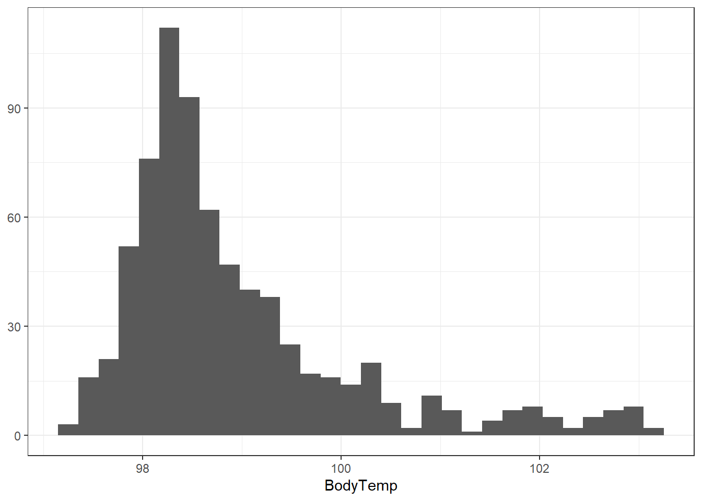
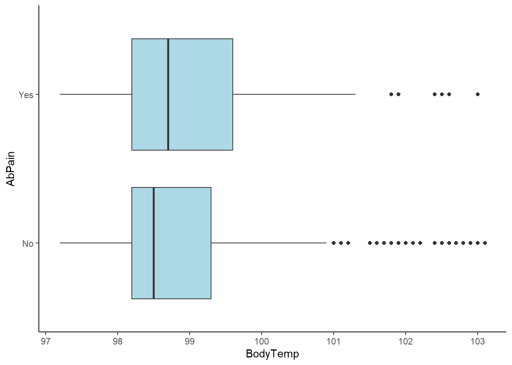
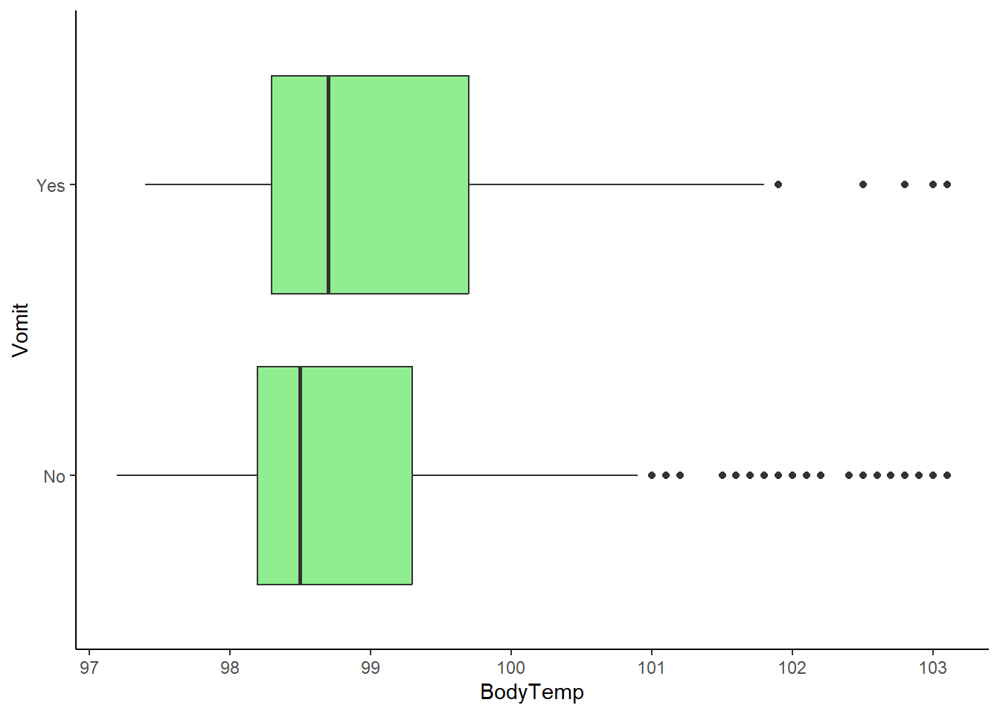
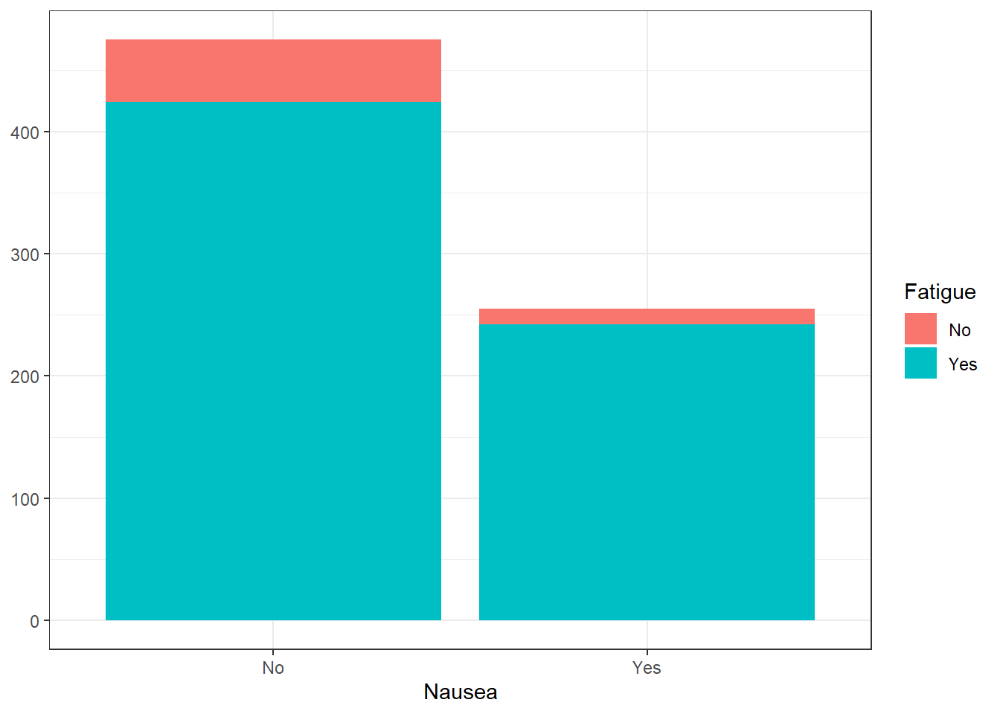
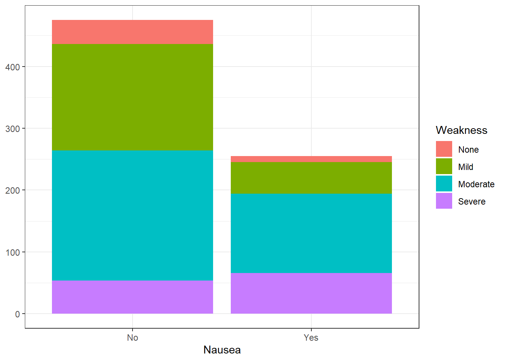
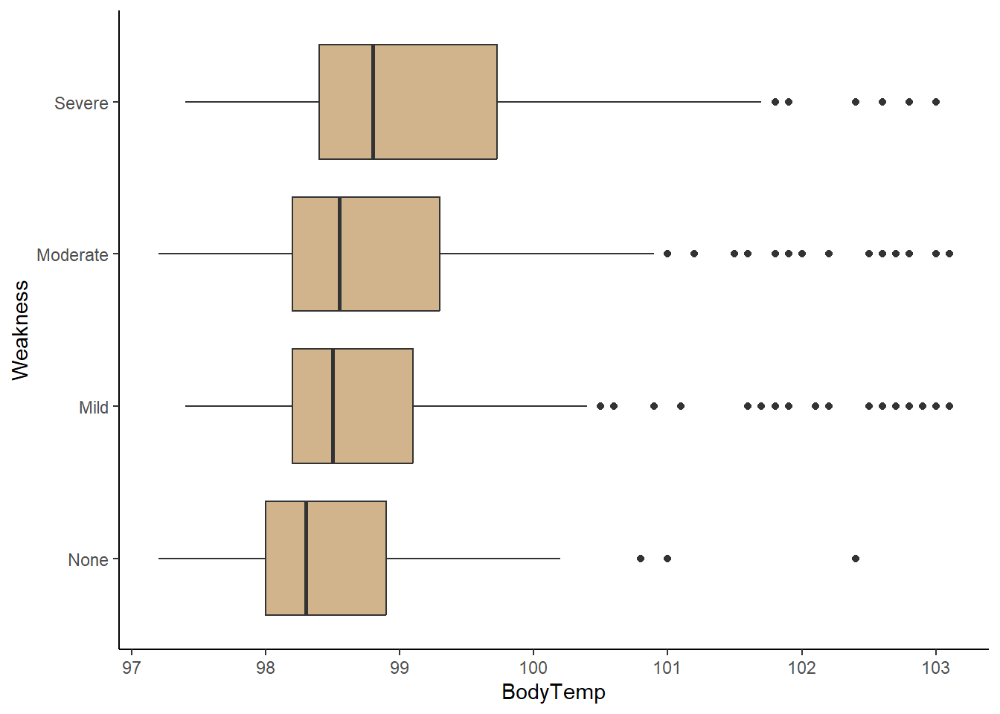

library(tidyverse)
library(ggplot2)
library(here)
library(dplyr)Flu Data Analysis
Exploration
Before we explore the data set, lets load the necessary packages for exploration.
Now, we can load the processed data set to explore.
flu_clean <- readRDS(here::here("fluanalysis","data","processed_data","flu_data_processed"))
glimpse(flu_clean)Rows: 730
Columns: 32
$ SwollenLymphNodes <fct> Yes, Yes, Yes, Yes, Yes, No, No, No, Yes, No, Yes, Y…
$ ChestCongestion <fct> No, Yes, Yes, Yes, No, No, No, Yes, Yes, Yes, Yes, Y…
$ ChillsSweats <fct> No, No, Yes, Yes, Yes, Yes, Yes, Yes, Yes, No, Yes, …
$ NasalCongestion <fct> No, Yes, Yes, Yes, No, No, No, Yes, Yes, Yes, Yes, Y…
$ CoughYN <fct> Yes, Yes, No, Yes, No, Yes, Yes, Yes, Yes, Yes, No, …
$ Sneeze <fct> No, No, Yes, Yes, No, Yes, No, Yes, No, No, No, No, …
$ Fatigue <fct> Yes, Yes, Yes, Yes, Yes, Yes, Yes, Yes, Yes, Yes, Ye…
$ SubjectiveFever <fct> Yes, Yes, Yes, Yes, Yes, Yes, Yes, Yes, Yes, No, Yes…
$ Headache <fct> Yes, Yes, Yes, Yes, Yes, Yes, No, Yes, Yes, Yes, Yes…
$ Weakness <fct> Mild, Severe, Severe, Severe, Moderate, Moderate, Mi…
$ WeaknessYN <fct> Yes, Yes, Yes, Yes, Yes, Yes, Yes, Yes, Yes, Yes, Ye…
$ CoughIntensity <fct> Severe, Severe, Mild, Moderate, None, Moderate, Seve…
$ CoughYN2 <fct> Yes, Yes, Yes, Yes, No, Yes, Yes, Yes, Yes, Yes, Yes…
$ Myalgia <fct> Mild, Severe, Severe, Severe, Mild, Moderate, Mild, …
$ MyalgiaYN <fct> Yes, Yes, Yes, Yes, Yes, Yes, Yes, Yes, Yes, Yes, Ye…
$ RunnyNose <fct> No, No, Yes, Yes, No, No, Yes, Yes, Yes, Yes, No, No…
$ AbPain <fct> No, No, Yes, No, No, No, No, No, No, No, Yes, Yes, N…
$ ChestPain <fct> No, No, Yes, No, No, Yes, Yes, No, No, No, No, Yes, …
$ Diarrhea <fct> No, No, No, No, No, Yes, No, No, No, No, No, No, No,…
$ EyePn <fct> No, No, No, No, Yes, No, No, No, No, No, Yes, No, Ye…
$ Insomnia <fct> No, No, Yes, Yes, Yes, No, No, Yes, Yes, Yes, Yes, Y…
$ ItchyEye <fct> No, No, No, No, No, No, No, No, No, No, No, No, Yes,…
$ Nausea <fct> No, No, Yes, Yes, Yes, Yes, No, No, Yes, Yes, Yes, Y…
$ EarPn <fct> No, Yes, No, Yes, No, No, No, No, No, No, No, Yes, Y…
$ Hearing <fct> No, Yes, No, No, No, No, No, No, No, No, No, No, No,…
$ Pharyngitis <fct> Yes, Yes, Yes, Yes, Yes, Yes, Yes, No, No, No, Yes, …
$ Breathless <fct> No, No, Yes, No, No, Yes, No, No, No, Yes, No, Yes, …
$ ToothPn <fct> No, No, Yes, No, No, No, No, No, Yes, No, No, Yes, N…
$ Vision <fct> No, No, No, No, No, No, No, No, No, No, No, No, No, …
$ Vomit <fct> No, No, No, No, No, No, Yes, No, No, No, Yes, Yes, N…
$ Wheeze <fct> No, No, No, Yes, No, Yes, No, No, No, No, No, Yes, N…
$ BodyTemp <dbl> 98.3, 100.4, 100.8, 98.8, 100.5, 98.4, 102.5, 98.4, …Data Exploration
-Outcomes of Interest-
The following are the outcomes of interest:
Body Temperature (continuous)
Nausea (categorical)
-Summary Statistics-
Our goal is to determine how the other symptoms of flu correlate with body temperature and nausea. To do this, we should first look at the summary statistics of body temperature and nausea.
Let’s start with body temperature. We will begin with plotting the data for body temperature to visualize the distribution.
flu_clean %>%
ggplot() +
geom_histogram(aes(BodyTemp)) +
theme_bw() +
ylab(NULL)`stat_bin()` using `bins = 30`. Pick better value with `binwidth`.
We can see from this histogram that the majority of subjects exhibit normal (98.6 degrees Fahrenheit) body temperatures.
Let’s see how many subjects are considered to have a fever (equal to or greater than 100.4 degrees Fahrenheit).
flu_clean %>% count(BodyTemp > 100.4) BodyTemp > 100.4 n
1 FALSE 652
2 TRUE 78We can see that out of the 730 observations, only 78 of them are considered to have a fever.
Now lets take a look at nausea. We can do a quick count of the Nausea data to give us an idea of its distribution.
#Shows the counts
print(flu_clean %>% count(Nausea)) Nausea n
1 No 475
2 Yes 255#Shows the percentages
with(flu_clean,table(Nausea)) %>%
prop.table()Nausea
No Yes
0.6506849 0.3493151 Approximately two-thirds of the observations did not exhibited nausea.
-Plotting Outcome of Interest Against Predictors-
Now that we have explored the two main outcomes and their distributions, we can plot these outcomes against predictors.
We can do this by plotting body temperature and nausea, respectively, against each predictor.
For body temperature, a box plot will be used to compare between body temperature and the predictors since it is a continuous variable. We are looking for differences in the quartiles and the mean between the box plots produced. A large difference may indicate that a predictor correlates with an increase/decrease in body temperature.
For nausea, a stacked box plot will allow for quick visual comparison between nausea and the predictor since nausea is a categorical variable. A comparison of the proportion of a correlation will be present if there is a significant proportion of observations experiencing the predictor AND nausea simultaneously (or experiencing neither). If the predictor is largely present when nausea isn’t, it can be considered a predictor of lack of nausea (or vice-versa).
1. Abdominal Pain
#Stacked histogram of nausea vs. abdominal pain
ggplot(flu_clean, aes(Nausea))+
geom_histogram(aes(fill=AbPain), stat = "count") +
theme_bw() +
ylab(NULL)Warning in geom_histogram(aes(fill = AbPain), stat = "count"): Ignoring unknown
parameters: `binwidth`, `bins`, and `pad`
#Boxplot of body temperature vs. abdominal pain
ggplot(flu_clean, aes(BodyTemp, AbPain))+
geom_boxplot(fill="lightblue")+
theme_classic()
There appears to be no correlation between abdominal pain and body temperature or nausea. It is worth noting the number of outliers in the higher body temperature ranges for those without abdominal pain.
2. Vomiting
#Stacked histogram of nausea vs. vomiting
ggplot(flu_clean, aes(Nausea))+
geom_histogram(aes(fill=Vomit), stat = "count") +
theme_bw() +
ylab(NULL)Warning in geom_histogram(aes(fill = Vomit), stat = "count"): Ignoring unknown
parameters: `binwidth`, `bins`, and `pad`
#Boxplot of body temperature vs. abdominal pain
ggplot(flu_clean, aes(BodyTemp, Vomit))+
geom_boxplot(fill="lightgreen")+
theme_classic()
There appears to be a considerably larger proportion of people who are vomitin with those experiencing nausea. This indicates a correlation between the two. In addition, while there is no drastic difference between body temperature means, there is a considerably larger number of outliers in the higher body temperatures for those who are not experiencing vomiting.
3. Fatigue
#Stacked histogram of nausea vs. fatigue
ggplot(flu_clean, aes(Nausea))+
geom_histogram(aes(fill=Fatigue), stat = "count") +
theme_bw() +
ylab(NULL)Warning in geom_histogram(aes(fill = Fatigue), stat = "count"): Ignoring
unknown parameters: `binwidth`, `bins`, and `pad`
#Boxplot of body temperature vs. abdominal pain
ggplot(flu_clean, aes(BodyTemp, Fatigue))+
geom_boxplot(fill="lightgrey")+
theme_classic()
There appears to be a large correlation between fatigue and nausea. However, a majority of those who are not experiencing nausea are still experiencing fatigue. It is difficult to ascertain a correlation from this information. On the other end, there is a significant difference in the box plots. It appears that there is a correlation between experiencing fatigue and having higher body temperatures.
4. Weakness
#Stacked histogram of nausea vs. weakness status
ggplot(flu_clean, aes(Nausea))+
geom_histogram(aes(fill=Weakness), stat = "count") +
theme_bw() +
ylab(NULL)Warning in geom_histogram(aes(fill = Weakness), stat = "count"): Ignoring
unknown parameters: `binwidth`, `bins`, and `pad`
#Boxplot of body temperature vs. abdominal pain
ggplot(flu_clean, aes(BodyTemp, Weakness))+
geom_boxplot(fill="tan")+
theme_classic()
There appears to be a correlation between high levels of weakness (severe, moderate) and experiencing nausea. In addition, any weakness level also appears to experience higher body temperatures on average compared to feeling no weakness at all.